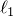
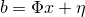
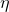
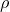
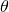
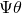

Generating image-size dictionary from a patch-size one
The existing methods learn a dictionary based on image patches. Therefore, the size of the learned dictionary will be the same as that of the image patches, for example, 5x5 or 9x9. In practice, however, we take measurements directly from images instead of their small patches. How can we use a patch-size dictionary to recover a large image from its measurements? Our method does this by generating a fullsize dictionary – in the same size as the image – from a patch-size dictionary. The picture below illustrates how to create image-size atoms from a patch-size dictionary atom.
 |
The increase in atom size does not affect image sparsity. Using the image-size dictionary , one can recover an image by solving the  problem
where ,  is noise, and  is related to the level of noise level. After obtaining , one can use  to estimate . With a careful numerical implementation, the dictionary size increase has only minor speed impact to the algorithm.